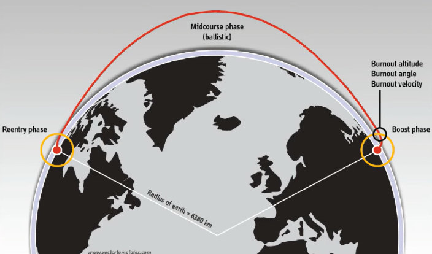
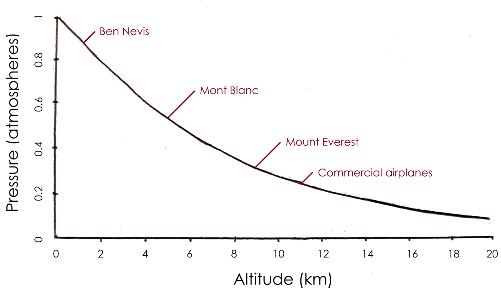
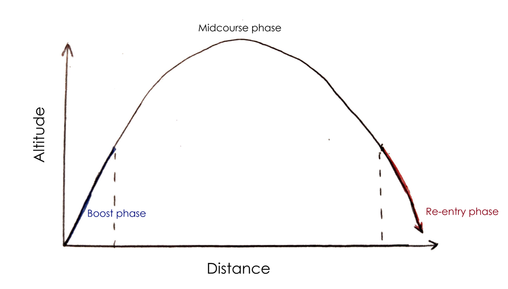
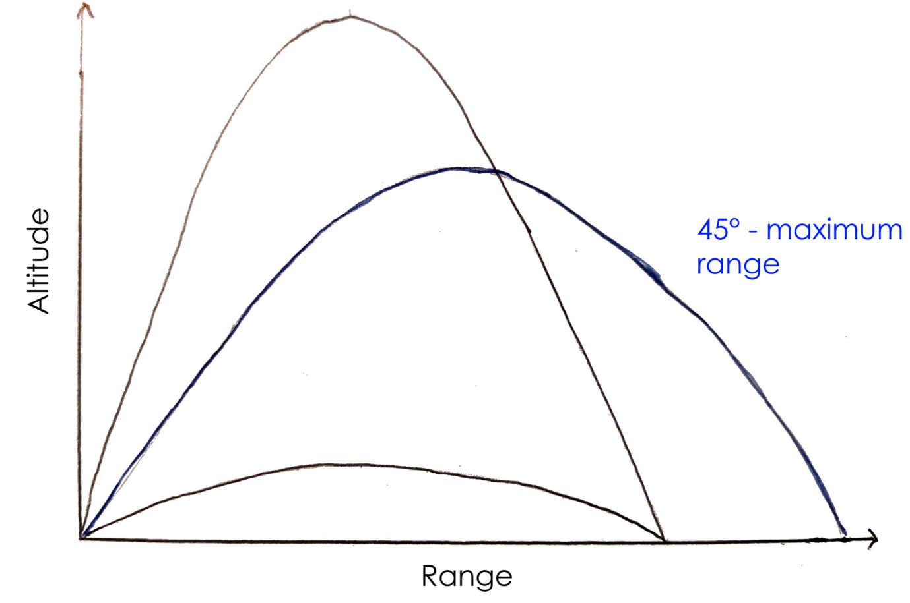
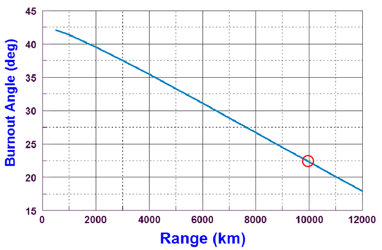
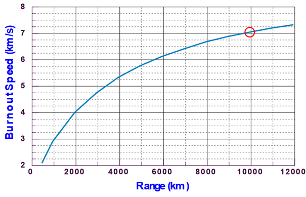
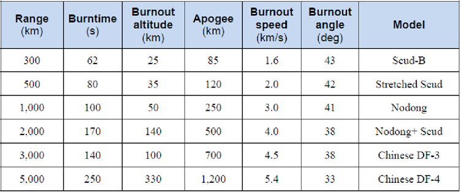
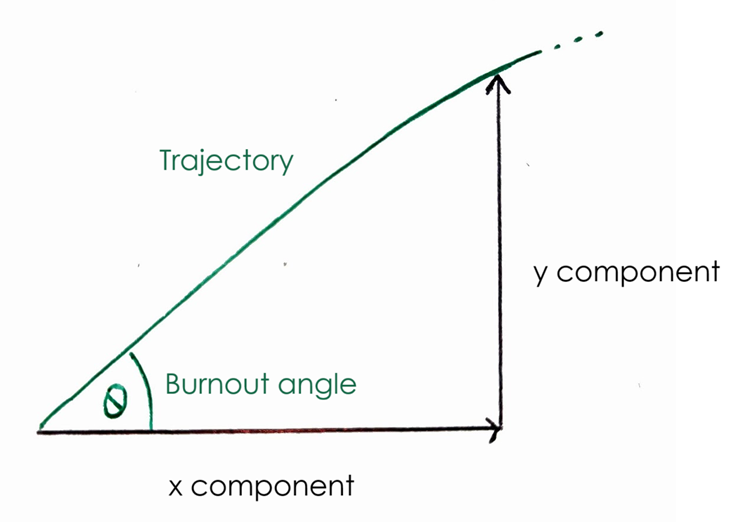
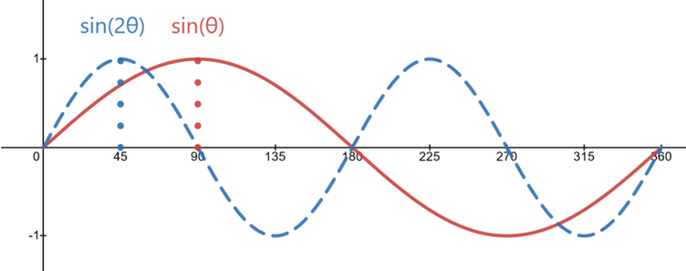

Trajectories of ballistic missiles
A ballistic missile's trajectory is made up of 3 stages:

The first phase only lasts a few minutes and is where the missile is propelled by its engines. This phase is what gives ballistic missiles their name, with the term ballistic originating from the Greek word “to throw”. [2]
The midcourse phase represents the vast majority of the flight, where the missile just coasts. Due to the height at which these missiles fly, drag becomes much reduced so the main force acting on the missile is gravity. Despite this, the exponential way in which the atmosphere reduces with height means that even at very high altitudes, there will still be a small amount of drag.

The re-entry phase refers to the last couple of minutes of the flight. During this time, atmospheric effects become much greater, causing the missile to lose accuracy and heat up.

What does range depend on?
The range of a missile depends on two main things:
The burnout angle refers to the angle of the missile after its boost phase. The greatest range is given by a burnout angle of 45°. Later we will derive this mathematically.

So far we have been working with the assumption that the Earth is flat, which can be considered more or less true with short range missiles.
However, the curvature of the earth means that the maximum range angle is actually less than 45°, meaning that the greater the range of the missile, the greater the impact of a curved earth and a smaller maximum range angle. [1]

The 2nd parameter that influences the missiles range is of course its speed after the boost phase. This is dependent on multiple things, such as the duration of the boost phase, the mass of the missile, and the type of engine used.

Here are some typical burnout parameters of real life ballistic missiles:

The maths describing trajectories
We will only consider the mathematics describing the trajectory for a flat Earth, since this makes the maths far simpler. We will also conveniently ignore air resistance, and assume that \(g\), the acceleration due to gravity, is constant everywhere.
Let’s first split up the missiles motion into its two component parts: its horizontal motion (along the x axis), and its vertical motion (along the y axis).

If we call the missiles initial velocity \(v_0\) , then the initial \(x\) component velocity, \(v_x\), and \(y\) component velocity ,\(v_y\), are:
\(v_x=v_0 \cos(θ) \)
\(v_y=v_0 \sin(θ) \)
[3]Since we assume the missile is only being acted upon by constant gravity, and therefore is experiencing constant acceleration, we can use the following SUVAT equation:
\(s= ut +{1\over 2} at^2\)
This will give us the displacement of the missile after a certain amount of time. Again, we will be splitting the displacement into its x and y components.
For the y component, we have gravity acting downwards and so have \(a=-g\), such that:
\(y=v_0 \sin (θ) t - {1 \over 2} g t^2\)
For the x component, we don’t have any acceleration (remember that we are ignoring air resistance), so:
\(x=v_0 \cos (θ) t\)
These 2 equations completely describe the trajectory of the missile. With them, we can now calculate the range of the missile, and from this, we can calculate the angle that gives us the most range.
The range of the missile is of course the distance between where the missile is fired, and where it hits the ground. When it hits the ground, \(y=0\), so the first thing we do is set the equation for y to zero:
\(y= v_0 \sin (θ) t -{1 \over 2} g t^2 =0\)
This is a quadratic in t, which we can solve, giving us the time at which the missile lands. Using the quadratic equation:
\(t={-b \pm \sqrt{b^2 - 4ac}\over 2a}\)
We get:
\(t={-v_0 \sin \theta \pm \sqrt{v_0^2 \sin^2 \theta} \over -g}\)
This gives us two solutions, as we would expect. One is zero (as the missile is being launched), and the other is:
\(t= {2v_0 \sin \theta\over g}\)
This is the time at which the missile lands. Now that we have this time, we can put this in our equation for the x displacement to get the range of the missile:
\(x=v_0 \cos (θ) {2v_0 \sin (θ) \over g} = {2 v_0^2 \cos (θ) \sin (θ) \over g}\)
We can simplify this expression by using the following trigonometric identity:
\(2\cos(θ)\sin(θ)=\sin(2θ)\)
To get:
\(Range={v_0^2\sin (2θ) \over g}\)
[5]Now that we have the range, we can work out which angle gives us the maximum range. To do this we just need to ask ourselves when \(\sin (2\theta)\) is biggest, between 0° and 90°. We can use the fact that \(\sin(2\theta)\) is just a sin wave squashed by a factor of 2. We know that a sin wave has a maximum at 90°, and so \(\sin (2\theta)\) has a maximum at 45°.

Below is a link to a model that allows you to change burnout angle and velocity and see what effect this has on a missile's trajectory.
Quiz
Test your knowledge with this article's quiz.
Exam style questions
Preparing for a test? Try our exam style questions!
All the following questions make the same assumptions that the article does. I.e. we assume no air resistance, that the Earth is flat and that the acceleration due to gravity is constant everywhere at \(g = 9.81 ms^{-2}.\)
Question 1
Your cousin Throckmorton wants to launch a rocket that has a vertical component of speed twice as great as its horizontal component. At what angle from the horizontal should he launch his rocket?
Answer:
Question 2
Assuming Throckmorton launches his rocket with an initial speed, \(v_0\), of \(100 ms^{−1}\), what is the horizontal and vertical component of its speed halfway through the rockets flight?
Answer:
Question 3
What is the range of this rocket?
Answer:
Bonus question
Throckmorton wants to hit a target exactly 1km away. If he is using the same rocket as previously, with the same initial velocity and angle, assuming the wind is travelling in the same direction as the rocket, what wind speed does he need for this to happen?
Answer:
See next: Laws of Motion
References
[1] Online Etymology Dictionary. "ballistic (adj.)" Retrieved 23/01/2024
[2] Image created by N. Piercy
[3] Union of concerned scientists, David Wright “An Introduction to Ballistic Missiles” Retrieved 23/01/2024
[4] Introduction to Biomechanics, Paul Peter Urone, Roger Hinrichs “3.4 Projectile Motion” Retrieved 04/02/2024
[5] Fuentes, Arianne G., Sean B. Larupay, and I. C. T. Strand. “Experiment 1: Projectile Motion using PhET Simulation.” Retrieved 04/02/2024
[6] Image created by N Piercy with the aid of Desmos